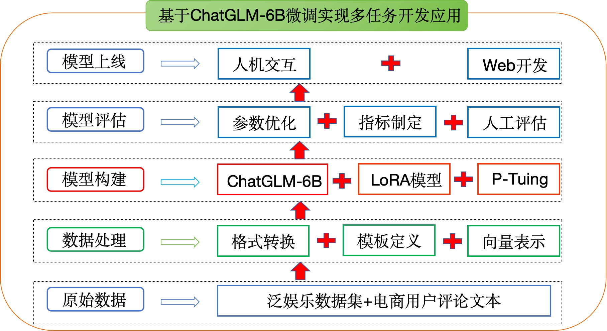
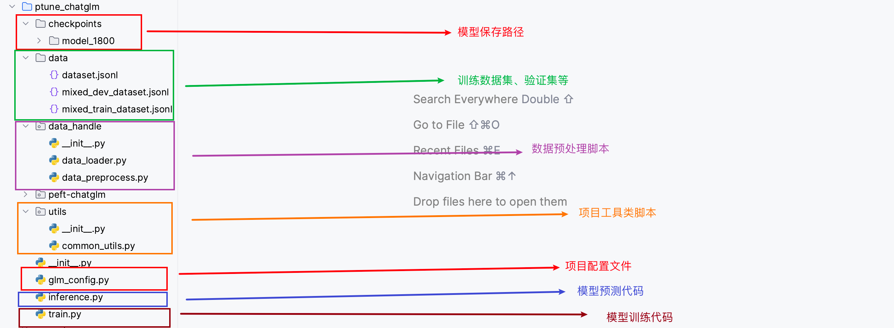

7.1 项目整体简介
基于ChatGLM-6B完成多任务项目介绍¶
学习目标¶
- 了解项目背景
- 理解ChatGLM-6B模型架构原理
- 安装项目必备的工具包
- 了解整体项目架构
1. 项目简介¶
LLM（Large Language Model）通常拥有大量的先验知识，使得其在许多自然语言处理任务上都有着不错的性能。但，想要直接利用 LLM 完成一些任务会存在一些答案解析上的困难，如规范化输出格式，严格服从输入信息等。因此，在这个项目中我们对大模型 ChatGLM-6B 进行 Finetune，使其能够更好的对齐我们所需要的输出格式。
2. ChatGLM-6B模型¶
ChatGLM-6B 是清华大学提出的一个开源、支持中英双语的对话语言模型，基于 General Language Model (GLM) 架构，具有 62 亿参数。该模型使用了和 ChatGPT 相似的技术，经过约 1T 标识符的中英双语训练(中英文比例为 1:1)，辅以监督微调、反馈自助、人类反馈强化学习等技术的加持，62 亿参数的 ChatGLM-6B 已经能生成相当符合人类偏好的回答（目前中文支持最好）。
相比原始Decoder模块，ChatGLM-6B模型结构有如下改动点：
- embedding 层梯度缩减：为了提升训练稳定性，减小了 embedding 层的梯度。梯度缩减的效果相当于把 embedding 层的梯度缩小了 10 倍，减小了梯度的范数。
- layer normalization：采用了基于 Deep Norm 的 post layer norm。
- 激活函数：替换ReLU激活函数采用了 GeGLU 激活函数。
- 位置编码：去除了绝对位置编码，采用了旋转位置编码 RoPE。
2.2 模型配置(6B)¶
| 配置 | 数据 |
|---|---|
| 参数 | 6.2B |
| 隐藏层维度 | 4096 |
| 层数 | 28 |
| 注意力头数 | 32 |
| 训练数据 | 1T |
| 词表大小 | 130528 |
| 最大长度 | 2048 |
2.3 硬件要求(官网介绍)¶
| 量化等级 | 最低GPU显存（推理） | 最低GPU显存（高效参数微调） |
|---|---|---|
| FP16(无量化) | 13GB | 14GB |
| INT8 | 10GB | 9GB |
| INT4 | 6GB | 7GB |
注意：显存的占用除了跟模型参数大小有关系外，还和文本支持最大长度有关
2.4 模型特点¶
- 优点
- 1.较低的部署门槛： INT4 精度下，只需6GB显存，使得 ChatGLM-6B 可以部署在消费级显卡上进行推理。
- 2.更长的序列长度： 相比 GLM-10B（序列长度1024），ChatGLM2-6B 序列长度达32K，支持更长对话和应用。
- 人类类意图对齐训练
- 缺点：
- 模型容量小，相对较弱的模型记忆和语言能力。
- 较弱的多轮对话能力。
3. 环境配置¶
3.1 基础环境配置：¶
本次环境依赖于趋动云https://platform.virtaicloud.com/算力
- 操作系统: CentOS 7
- CPUs: 8 core(s)，内存：48G
- GPUs: 1卡， A800， 80GB GPUs
- Python: 3.9
- Pytorh: 1.11.0
- Cuda: 11.3.1
- 价格：13.58元/小时
3.2 安装依赖包：¶
- 创建一个虚拟环境，您可以把
llm_env修改为任意你想要新建的环境名称：
conda create -n llm_env python=3.9
- 激活新建虚拟环境并安装响应的依赖包：
conda activate llm_env
pip install -r requirements.txt
requirements.txt文件内容如上所示protobuf>=3.19.5,<3.20.1 transformers>=4.26.1 icetk cpm_kernels streamlit==1.17.0 matplotlib datasets==2.10.1 accelerate==0.17.1 packaging>=20.0, psutil, pyyaml, peft
4. 项目架构¶
项目架构流程图：

项目代码架构图：

小结总结¶
本章节主要介绍了项目的背景、项目的适配环境以及项目的整体架构流程，以此来方便我们整个项目的开发。